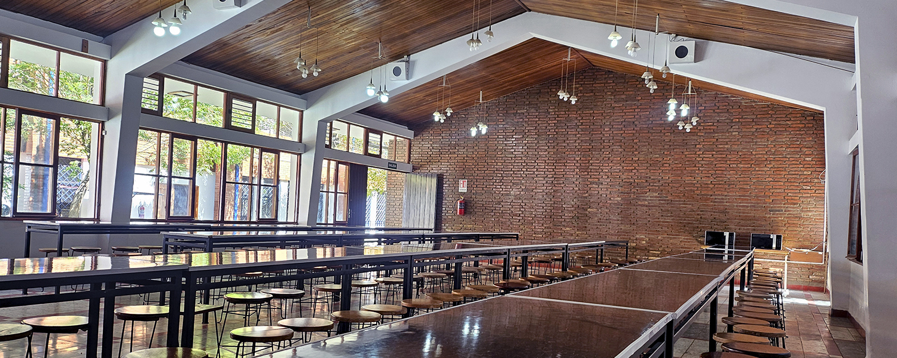
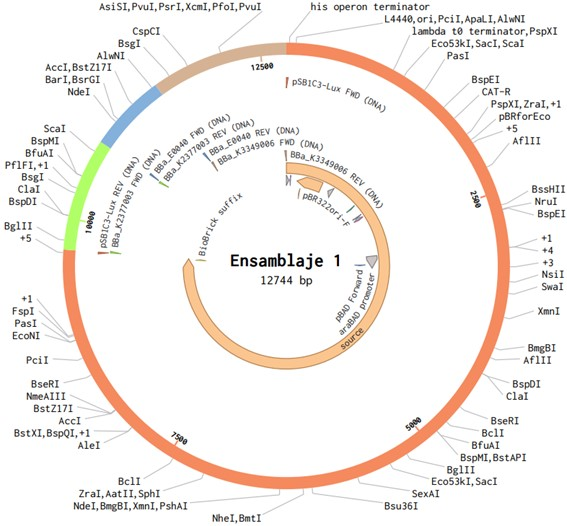
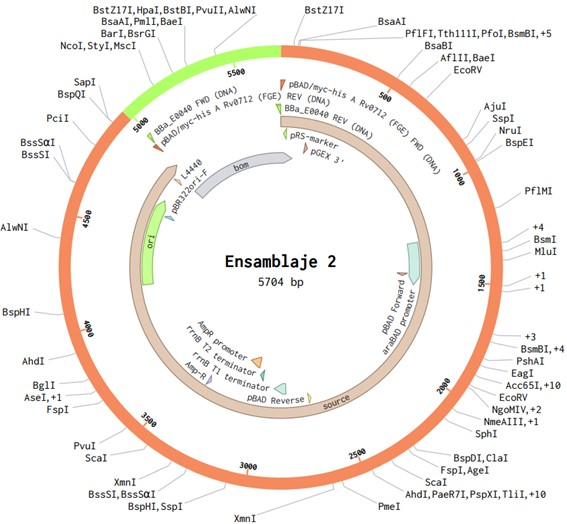
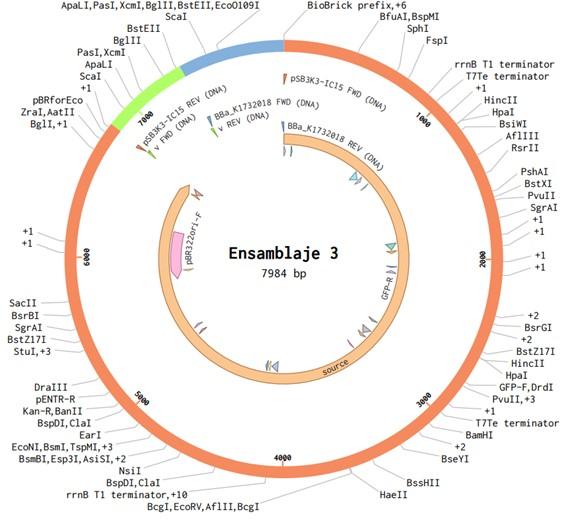

Nuestro proyecto se enmarca dentro del área de Salud y Bienestar, alineado con los Objetivos de Desarrollo Sostenible. La motivación principal surge de una problemática cotidiana pero que, al mismo tiempo, tiene implicaciones más amplias: la descomposición de frutas y los efectos asociados a este proceso.
Cuando las frutas se descomponen de manera natural, liberan olores desagradables que generan incomodidad en los espacios donde se almacenan los residuos, como comedores, cafeterías o incluso en el hogar. Estos olores no solo resultan molestos, sino que también se relacionan con condiciones poco higiénicas que pueden afectar la percepción de limpieza y bienestar de las personas. Por lo tanto, el problema no es únicamente el mal olor, sino también la sensación de insalubridad que se genera en la vida diaria.
En este contexto, nuestro planteamiento es claro: pretendemos acelerar el proceso de descomposición de las frutas y, al mismo tiempo, mitigar el aroma característico de la podredumbre. De esta manera, no solo se reduce el tiempo en el que estos residuos permanecen en condiciones desagradables, sino que también se controla el impacto negativo de su olor.
Es importante destacar que este problema, aunque cotidiano, tiene una relevancia que va más allá de la simple incomodidad: la gestión de residuos orgánicos está directamente vinculada a la salud pública y a la calidad de vida. Resolverlo significa aportar a espacios más limpios, menos expuestos a olores fuertes, y en consecuencia, más saludables.
En conclusión, el problema que enfrentamos puede resumirse en una pregunta sencilla: ¿cómo hacer que los residuos de frutas se descompongan rápido y sin causar mal olor? Nuestra respuesta apunta a un enfoque biotecnológico que combine la aceleración de la descomposición con la reducción de los aromas desagradables, en beneficio directo del bienestar de las personas y de la gestión más eficiente de los desechos.
El diseño genético de nuestro proyecto se basa en la construcción y combinación de diferentes plásmidos que cumplen funciones complementarias. El primero de ellos es el pSB1C3-LUX, un plásmido de alta copia que contiene el sistema lux (luciferasa bacteriana), el cual sirve como reportero lumínico. Sobre esta base se ensamblaron tres partes biológicas: BBa_E0040 (eGFP), que actúa como reportero fluorescente; BBa_K3349006 (PelA), una enzima pectinolítica encargada de degradar la pectina presente en la pared celular de las frutas, acelerando así su descomposición; y BBa_K237703, otra enzima pectinolítica complementaria que refuerza el mismo proceso. La combinación de estas partes permite obtener un sistema doble: por un lado, la expresión simultánea de dos pectinasas que favorecen la degradación más rápida de la fruta, y por otro, un doble sistema reportero (Lux y GFP) que facilita la monitorización de la actividad del plásmido tanto por bioluminiscencia como por fluorescencia.
El segundo plásmido considerado es el pBAD/Myc-His-ARBO712-FG, un vector inducible por arabinosa que incluye una etiqueta His para la purificación de proteínas. En este constructo se ensambló nuevamente la parte BBa_E0040 (eGFP), que en este caso funciona como control positivo. Su función principal no es intervenir directamente en la descomposición de la fruta ni en la reducción de olores, sino verificar la correcta inducción del sistema PBAD. Cuando se añade arabinosa, se activa el promotor y se expresa GFP, lo que asegura que la construcción responde adecuadamente a la inducción, además de permitir la purificación y verificación de la proteína gracias a la etiqueta His.
Finalmente, se diseñó un tercer plásmido, el pSB3K3-IC15, de copia media y con resistencia a kanamicina, que permite la coexpresión junto a otros constructos. En este plásmido se ensamblaron las partes BBa_K1732003 y BBa_K1732018, ambas correspondientes a variantes de la luciferasa de Gaussia princeps (GLuc), una proteína secretada que actúa como reportero lumínico. La ventaja de este sistema es que la luciferasa, al ser secretada al medio, puede medirse directamente en el sobrenadante, lo cual sirve como indicador de que las bacterias no solo expresan proteínas, sino que también son capaces de secretarlas hacia el exterior. Esto es clave para confirmar que las enzimas de degradación, como las pectinasas, pueden actuar efectivamente sobre las frutas al liberarse fuera de la célula.
En conjunto, estos tres plásmidos constituyen el núcleo de nuestro diseño: uno enfocado en la degradación acelerada de la fruta y con reportes visuales de actividad, otro como control de inducción que garantiza la funcionalidad del sistema, y un tercero que valida la secreción de proteínas como paso fundamental para que la descomposición se lleve a cabo de manera efectiva.
Los resultados esperados de nuestro proyecto se concentran en dos ejes principales: por un lado, la aceleración del proceso de descomposición de las frutas y, por otro, la mitigación del olor desagradable que este proceso normalmente produce.
En un escenario ideal, al aplicar nuestra construcción genética, las sobras de frutas del almuerzo no seguirían el mismo ritmo lento y oloroso de descomposición natural, sino que experimentarían un proceso más rápido y eficiente. Esto significa que, en menos tiempo, se alcanzaría un estado de degradación más avanzado, lo que representa una ventaja tanto en términos de manejo de residuos como en el aspecto práctico de mantener espacios limpios y ordenados.
Al mismo tiempo, se espera que la producción de compuestos responsables del mal olor sea reducida de manera significativa. En lugar de que los desechos desprendan aromas fuertes asociados a la podredumbre, la intervención genética buscará neutralizarlos o disminuirlos. De esta forma, no solo se contribuye a que los residuos desaparezcan más pronto, sino que también se mejora la experiencia de quienes conviven en los lugares donde se generan estos residuos.
En resumen, lo que buscamos conseguir es sencillo de enunciar pero complejo de alcanzar: que los residuos de frutas se descompongan con mayor rapidez y sin generar un olor intenso. Este doble resultado esperado no solo aporta a la comodidad y al bienestar en entornos comunes como cafeterías, hogares o comedores, sino que también abre la puerta a una gestión más eficiente y aceptable de los desechos orgánicos.
El trabajo con biología sintética siempre abre la puerta a reflexiones de carácter ético y social, pues no se trata únicamente de crear una construcción genética que funcione en el laboratorio, sino también de pensar qué significa y qué consecuencias puede tener su uso en la vida cotidiana. En nuestro caso, el proyecto se centra en la aceleración de la descomposición de frutas y en la reducción del mal olor, lo que parece un objetivo simple, pero que inevitablemente plantea cuestiones más amplias.
Desde la perspectiva ética, es importante reconocer que toda intervención biotecnológica debe realizarse con responsabilidad. La manipulación de bacterias o de partes biológicas, aunque común en la biología sintética, implica la necesidad de controles de bioseguridad y de un uso consciente. La pregunta ética no es solo si la técnica funciona, sino también si se la aplica de manera segura y si su impacto está debidamente evaluado. En este sentido, nuestro proyecto propone una aplicación que, lejos de poner en riesgo a la población, busca mejorar la calidad de vida mediante la gestión más higiénica de los residuos orgánicos.
Por otra parte, desde el punto de vista social, la relevancia de este proyecto radica en cómo puede influir en la percepción de los residuos y en la salud pública. El mal olor y la lenta descomposición de restos de frutas son factores que afectan la vida diaria en espacios compartidos como comedores o cafeterías, generando incomodidad y asociándose con la falta de higiene. Poder ofrecer una alternativa biotecnológica que acelere la descomposición y reduzca el olor contribuye a un entorno más limpio, saludable y agradable.
En conclusión, el impacto ético y social de nuestro proyecto no se limita a su funcionamiento técnico. También se proyecta en la reflexión sobre el uso responsable de la biología sintética y en la posibilidad de aportar soluciones concretas que beneficien a las personas en su día a día. Nuestro compromiso es desarrollar la propuesta con una mirada crítica y constructiva, evaluando siempre sus beneficios y sus implicaciones, para que la aplicación biotecnológica sea no solo innovadora, sino también ética y socialmente responsable.
Covarrubias Sol
Flores Esteban
Moncada Marcela
Paredes Elizabeth
Verastegui Karen